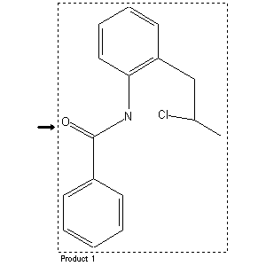

|  |
| FA | RX(1); FLST(1); RX(1) |
Reaction (1 of 1)
| Reaction ID | 8150333 |
| Reactant | 1-benzoyl-2-methyl-indole dihydride-(2.3) |
| Product BRN | 3341119 |
| Product | benzoic acid-[2-(2-chloro-propyl)-anilide] |
| No. of Reaction Details | 1 |
Reaction Details (1 of 1)
| Reaction Classification | Preparation (half reaction) |
| Reagent | PCl5 |
| Temperature | 130 - 160 |
| Other Conditions | Behandeln des Reaktionsproduktes mit Eiswasser |
| Comment | Handbook |
| Citation Pointer | 963358; Journal; v. Braun; Steindorff; CHBEAM; Chem.Ber.; 37; 1904; 4583;960465; Patent; Merck; DE 164365; |
Reference (1 of 2)
| Citation Number | 960465 |
| Document Type | Patent |
| Patent Author | Merck |
| Patent Number | DE 164365 |
Reference (2 of 2)
| Citation Number | 963358 |
| Document Type | Journal |
| Authors | v. Braun; Steindorff |
| CODEN | CHBEAM |
| Journal Title | Chem.Ber. |
| (Series) Volume | 37 |
| Publication Year | 1904 |
| Page | 4583 |